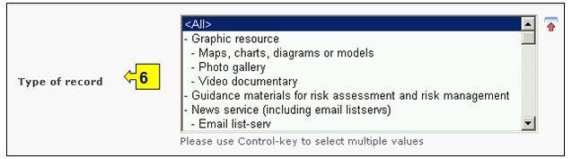

URL: http://bch.cbd.int/database/bibliographic-references/
议定书第20条成立了生物安全信息交换所，以利于在缔约方之间交流有关改性活生物体的信息和经验，从而协助缔约方执行议定书。为实现这一作用，生物安全信息交换所包含各缔约方、各政府和组织提交的与生物安全和执行议定书有关的信息。
除本模块2.7节介绍的生物安全信息资源中心外，生物安全信息交换所还提供自1990年以来在国家和国际学术期刊上发表、与生物安全和生物技术风险评估有关的科研论文书目汇总（全文检索+摘要）。科研书目数据库由国际遗传工程与生物技术中心主办和管理,并与生物安全信息交换所可互操作.
可通过导航工具条上的查询信息下拉菜单上的链接、或通过查询信息页面左侧菜单中的链接或同一页面上关于科研书目数据库的文字介绍中的链接进入搜索科研书目数据库的界面。

图 94
在 搜索生物安全科研书目数据库 页面上有十个搜索标准框，可用于对该数据库中的搜索作进一步限定。每一个搜索标准框均有一个下拉式菜单，用于选择所需的标准。每一个下拉菜单的缺省设置是菜单列表顶端的第一个选项。在每一个方框的右侧有一个按钮，使用户可以启动多重选择。一旦进入多重选择模式，可在按住Ctrl（控制）键的同时点击有关标准从而在选择中添加更多标准。
若搜索产生的记录超出1000条则截去剩余部分只显示前1000条。
图 95
方框1[标题]使用户可以在此输入出版物标题。用户也可以输入标题中的一个或几个词语，使用既定的搜索句法在几个词之间使用“和”或“或”。

图 96
方框2[作者]用户可在本搜索方框中输入作者姓，搜索一个或几个具体的作者。

图 97
方框3[发表年份]列出了论文发表日期的选项。用户可选择所搜索文章发表的确切年份（只使用年份方框），或选择一个时间范围（“早于”或“晚于”所选择的年份）。

图 98
方框4[出版社]可使用户根据出版社名称搜索数据库中的文章。

图 99
方框5[专题领域]列出了现有出版物的主要专题领域，用户可以将搜索范围缩小到这里列出的一个或多个领域。

图 100
方框6[纪录条类型]列出了本数据库中储存的纪录条类型。用户可将搜索限定在一个特定的信息来源。

图 101
方框7[语言]用户可将搜索限定在使用某一种或几种语言的文件。

图 102
方框8[国际标准序列号]使用户可输入一个或多个国际标准序列号，从而找到感兴趣的具体出版物。国际标准序列号是一个九位数的独特号码，用于识别印刷版或电子版期刊出版物。国际标准序列号系统于1975年作为国际标准ISO3297采纳通过。

图 103
方框9[记录日期]允许用户根据数据纪录条在生物安全信息交换所登记的日期限定搜索范围。下拉菜单提供了若干个选项，可将搜索限定在某一选定时间间隔（如前一天、上个月、去年等）内提交的纪录条。

图 104
方框10[关键词搜索]提供了使用关键词缩小搜索范围的可能。用户可使用标准关键词句法（结合使用“和/或”）搜索多个词或词的核心部分（如“进口或出口”）。使用关键词进行的搜索结果只显示含有与被搜索文字完全一样的纪录条而不会包含未输入的同义词（例如，只用一个关键词“Maize”(玉米)进行搜索的结果包括含有“Maize”的纪录条而不包括含有“Corn”或”Zea mays”（玉米同义词）的纪录条。

图 105
搜索页提供了三个按键用于生成搜索结果。 键（搜索界面的顶端和底部均有）使用户根据在搜索功能方框中选择的搜索标准启动搜索。搜索结果缺省设置为根据国家名字母顺序排列。 (位于搜索界面的底部)使用户可获得本数据库中所有记录条的列表。

图 106
示例：用户希望查找最近发表的有关作物基因流动的科研文章。用户（一）在发表年份方框中选择晚于2006 并（二）在专题领域方框中选择基因流动或异交。搜索结果按照文章标题字母顺序排列。
图 107

图 108
假设用户发现作者为Lavigne的一篇文章有用，可将这一姓名添加到作者搜索方框中，对搜索进行限定。这样可得到同一作者有关这一专题近来发表的更多文章。

图 109

图 110